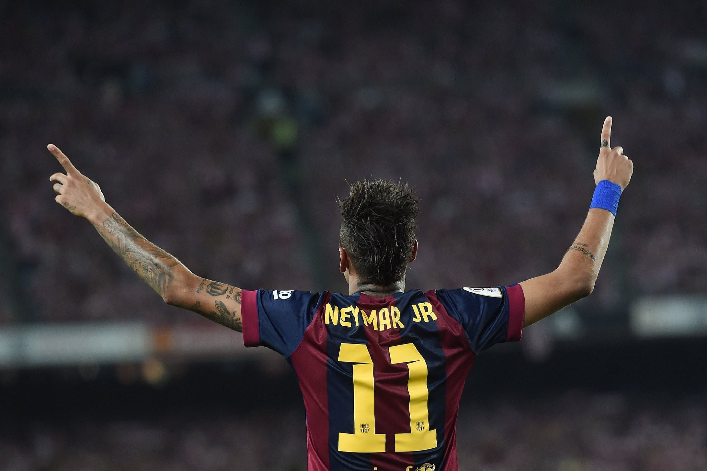

Em 2013, Neymar foi contratado pelo FC Barcelona, iniciando um novo capítulo em sua carreira. No clube espanhol, passou a atuar ao lado de grandes estrelas do futebol mundial, incluindo Lionel Messi e Luis Suárez. Juntos, formaram o famoso trio "MSN", considerado um dos ataques mais fortes da história do futebol. Neymar evoluiu tecnicamente e tornou-se peça fundamental da equipe. Na temporada 2014–15, ajudou o Barcelona a conquistar a Liga dos Campeões da UEFA, o Campeonato Espanhol e a Copa do Rei, alcançando a histórica tríplice coroa. Durante seus quatro anos na Espanha, Neymar marcou mais de 100 gols, distribuiu inúmeras assistências e protagonizou partidas memoráveis. Uma das mais lembradas foi a vitória sobre o PSG por 6 a 1, em 2017, quando teve participação decisiva na histórica remontada do Barcelona. Sua passagem pelo clube consolidou seu nome entre os melhores jogadores do mundo.